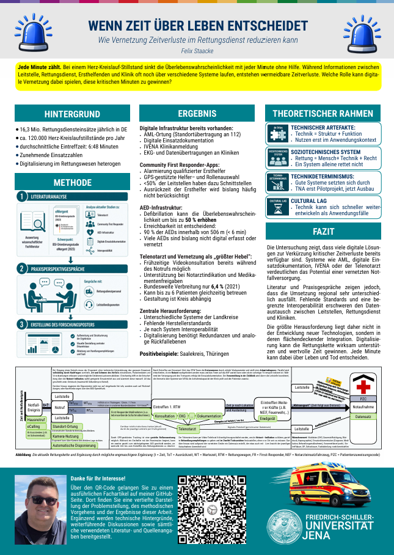

Wenn Zeit über Leben entscheidet
Wie digitale Vernetzung Zeitverluste im Rettungsdienst reduzieren kann. Diese Begleitseite lässt das Poster ausführlicher auf und ordnet die präklinische Rettungskette als technisches, organisatorisches und rechtliches Gesamtsystem ein.
Der zentrale Befund ist bewusst vorsichtig formuliert: Digitalisierung rettet nicht automatisch Leben. Sie wird erst wirksam, wenn Standortdaten, Leitstelle, Rettungsmittel, Ersthelferalarmierung, Telenotarzt, Klinikvoranmeldung und Dokumentation möglichst ohne Medienbrüche zusammenspielen.1

Vorschau des Posters. Zum öffnen anklicken.
Wo gehen in der präklinischen Rettungskette kritische Minuten verloren?
Das Poster setzt bei einer einfachen Beobachtung an: Im Rettungsdienst ist Zeit keine abstrakte Kennzahl, sondern Teil der medizinischen Prognose. Bei Herz-Kreislauf-Stillstand, Polytrauma, Schlaganfall oder akutem Koronarsyndrom entscheidet nicht nur die medizinische Maßnahme selbst, sondern auch, wann sie beginnt, welche Informationen bereits vorliegen und ob die Zielklinik vorbereitet ist.
Die Untersuchung fragt deshalb nicht nur nach einzelnen Geräten, sondern nach der Kette zwischen Notruf, Leitstellendisposition, automatischer Standortermittlung, Alarmierung geeigneter Ressourcen, Ersthelfer-App, AED-Nutzung, RTW- und NEF-Einsatz, Telenotarzt, Klinikvoranmeldung, Übergabe und digitaler Dokumentation.
Der Rettungsdienst ist zeitkritisch, heterogen und technisch ungleich entwickelt
Der Rettungsdienst ist ein zentraler Teil des deutschen Gesundheitssystems. Die ältere Posterfassung arbeitete mit 16,3 Millionen Rettungsdiensteinsätzen jährlich in Deutschland und verwies auf die wachsende Bedeutung präklinischer Prozesszeiten.2 Besonders deutlich wird der Zeitdruck bei der außerklinischen Reanimation: Das Deutsche Reanimationsregister weist für 2024 mindestens 54.000 Reanimationen pro Jahr aus. Die Datengrundlage umfasst 27.009 Fälle aus 198 Rettungsdiensten und eine abgedeckte Bevölkerung von rund 42 Millionen Menschen.3
Medizinisch geht es um eine früh einsetzende Rettungskette. Herzdruckmassage, Defibrillation, professionelle Versorgung und die richtige Zielklinik müssen möglichst früh zusammenkommen. Zugleich darf der Rettungsdienst nicht nur auf maximale Aktivität getrimmt werden. Die Stellungnahme zu Reanimationsabbruch und Reanimationsverzicht betont, dass Reanimationsentscheidungen an Therapieziel, Prognose, Patientenwillen und medizinischer Sinnhaftigkeit gebunden bleiben müssen.4
Organisatorisch ist die Lage schwieriger. Der Rettungsdienst ist in Deutschland Ländersache, kommunal und trägerabhängig organisiert. Dadurch entstehen unterschiedliche Beschaffungspfade, unterschiedliche Leitstellensysteme, verschiedene Dokumentationslösungen und nicht überall kompatible technische Infrastrukturen.5
Die Untersuchung verbindet Literatur, Praxisperspektive und Systemmodell
Die Methode wurde im Poster bewusst knapp gehalten. Für die GitHub-Seite lässt sie sich als Flussdiagramm darstellen. Das passt besser, weil die Untersuchung selbst eine Prozessfrage stellt: Wo entstehen Medienbrüche und wo kann Vernetzung helfen?
eMergent ist der wichtigste Referenzrahmen für die technische Lage
Für die Untersuchung ist eMergent zentral, weil das Projekt nicht nur einzelne Produkte beschreibt, sondern die Digitalisierung des bodengebundenen Rettungsdienstes systematisch als Infrastrukturproblem betrachtet. Die Orientierungsstudie sollte zunächst erfassen, welche vernetzten Produkte im Rettungsdienst eingesetzt werden, welche Schnittstellen im Alltag vorkommen und welche Digitalisierungsvorhaben relevant sind. Luft- und Wasserrettung sowie Gegenstellen wie Krankenhausinformationssysteme wurden bewusst ausgegrenzt.6
Die Teilstudie I vertieft diesen Überblick. Sie beschreibt den zivilen Rettungsdienst als heterogenes Feld mit unterschiedlichen Betreibermodellen, kommunaler Organisation und verschiedenen Leistungserbringern. Weit verbreitet sind Navigationssysteme mit Zusatzfunktionen, Tablet-PCs zur Notfalldokumentation, Patientenmonitore mit Defibrillationsfunktion und EKG-Übertragung. Gleichzeitig wird deutlich, dass Telenotarzt-Systeme zwar als Integrationsmotor gelten, aber noch nicht überall im Regelbetrieb angekommen sind.7
Besonders wichtig ist der Befund zur Interoperabilität. eMergent zeigt, dass ein einheitliches Bild des Digitalisierungsstands fehlt. Einige Landkreise arbeiten bereits mit automatisierter Übermittlung von Monitor-Daten an digitale Dokumentationssysteme und mit automatisierter Krankenhausvoranmeldung, während andere Strukturen weiterhin papiernah oder stärker manuell arbeiten. Genannt werden unter anderem corpuls3, rescuetrack und NIDApad als prominente beziehungsweise verbreitete Systeme.8
Die Teilstudie II ergänzt diese Perspektive durch Sicherheitsuntersuchungen. Sie betrachtet ausgewählte Medizin- und Digitalprodukte im Umfeld des bodengebundenen Rettungsdienstes und beschreibt Bedrohungsmodell, Testumfang, Produktanalysen und Schwachstellenkategorien. In der Bilanz werden nicht primär unsichere Funk- oder Kommunikationsprotokolle als Hauptproblem herausgestellt, sondern häufig Systemdesign- und Implementierungsfehler. Dazu zählen etwa Standardpasswörter, unzureichend geschützte Schnittstellen, unsichere Kiosk-Implementierungen, Wartungszugänge, Berechtigungsprobleme und Webservice-Schwächen.9
Für das Poster folgt daraus: Digitalisierung kann im Rettungsdienst sehr konkrete Vorteile bringen. Sie muss aber als kritische Infrastruktur gedacht werden. Ein System, das im Normalbetrieb gut aussieht, reicht nicht aus. Es braucht Redundanz, klare Verantwortlichkeiten, Schulung, IT-Sicherheitsmanagement und analoge Rückfallebenen für Störungen, Netzausfälle oder Serverprobleme.
Der größte Nutzen liegt nicht im Einzelgerät, sondern in der Verbindung der Stationen
Aus den Quellen und aus dem Poster ergeben sich mehrere Ergebnislinien. Erstens ist digitale Infrastruktur bereits vorhanden. Automatische Standortdaten, digitale Einsatzdokumentation, Einsatznavigation, Telemetrie, Klinikvoranmeldung und Telenotarzt sind keine Science-Fiction. Zweitens entstehen die Probleme dort, wo diese Bausteine nicht zuverlässig miteinander sprechen. Drittens sind die stärksten Effekte dort zu erwarten, wo Informationen früher und strukturierter weitergegeben werden.
Bei Ersthelfer-Apps zeigt die Forschung, dass nicht nur die Distanz entscheidend ist. Ganter et al. untersuchen die Turnout Time, also die Zeit zwischen Alarmannahme und tatsächlichem Aufbruch des First Responders. Diese lag median bei 1:45 Minuten und machte etwa ein Drittel der Gesamtreaktionszeit aus. Die Gesamtzeit lag median bei 5:22 Minuten. Daraus folgt: Gute Algorithmen dürfen nicht nur Luftlinie oder Fahrstrecke berechnen, sondern müssen Startverzögerung, Tageszeit und Verhaltensmuster berücksichtigen.10
Auch scheinbar kleine Prozessentscheidungen können relevant sein. Talikowska et al. zeigen am Beispiel spezieller Dispatch-Codes für offensichtliche oder erwartete Todesfälle, dass präzisere Disposition Ressourcen schonen kann, ohne die Patientensicherheit zu gefährden. Für den deutschen Kontext ist das keine direkte Übernahme, aber ein gutes Beispiel dafür, dass digitale Dispositionslogik nicht nur schneller, sondern auch differenzierter werden muss.11
Der Saalekreis zeigt, wie der Rettungsdienst technisch in Zukunft aussehen kann
Der Saalekreis ist für diese Seite bewusst nicht als Werbebeispiel eingebaut, sondern als positives Fallbeispiel aus der Praxisperspektive. Der Punkt ist: Hier erscheint Digitalisierung nicht als einzelnes Gerät im Fahrzeug, sondern als Bündel aus Leitstellenanbindung, Standortdaten, digitaler Dokumentation, Klinikvoranmeldung, Telenotarzt-Option und ergänzender Ersthelferalarmierung.
Aus der Praxisperspektive ergibt sich ein technisch sehr interessantes Bild: Die NORA-App kann Standortdaten und Chatkommunikation übermitteln. Klassische Notrufe laufen weiter über die Leitstelle, aber digitale Zusatzinformationen können die Disposition ergänzen. Rettungsdienste arbeiten mit Meldern, Tablets und Systemen wie Rescuetrack oder corpuls. EKG-Daten und Einsatzdaten können in Richtung Klinik oder Dokumentationssystem weitergegeben werden. Über IVENA können Zielkliniken abgefragt und Voranmeldungen strukturiert werden. Der Telenotarzt kann bei bestimmten Lagen konsultiert werden, wodurch ärztliche Entscheidungskompetenz früher in die Rettungskette eingebunden wird.
NORA ist dabei mehr als ein zusätzlicher Eingangskanal auf dem Smartphone. Die offizielle Notruf-App der Bundesländer leitet Notrufe an die jeweils zuständige Einsatzleitstelle weiter, übermittelt den über das Mobilgerät ermittelten Standort, ermöglicht eine strukturierte Abfrage der Notfallart und stellt nach dem Absenden eine Chatverbindung zur Leitstelle her. Gerade für Menschen, die nicht oder nur eingeschränkt telefonieren können, ist das ein eigenständiger Zugang zu Polizei, Feuerwehr und Rettungsdienst.13
Für die Leitstelle entsteht daraus eine konkrete Systemanforderung: Die Leitstellensoftware darf solche App-Notrufe nicht nur als externe Meldung anzeigen, sondern muss Standort, strukturierte Angaben, Chatverlauf, Zeitstempel und Zuständigkeit belastbar verarbeiten können. Belastbar heißt hier technisch und organisatorisch: Das System muss Datenlastspitzen aushalten, Meldungen priorisieren, Protokollierung und Nachvollziehbarkeit sichern, Medienbrüche vermeiden und trotzdem im Einsatz schnell bedienbar bleiben. Eine gute NORA-Anbindung ist deshalb nicht nur eine App-Frage, sondern eine Frage der Leitstellenarchitektur.
Die Informationen aus der Praxisnotiz lassen sich direkt in die Prozesslogik einbauen: Zunächst können Notrufdaten, Standortinformationen und gegebenenfalls textbasierte Zusatzinformationen in der Leitstelle ankommen. Dort werden sie nicht als Ersatz für die Disposition verstanden, sondern als Ergänzung der klassischen Notrufabfrage. Nach der Alarmierung werden die relevanten Einsatzdaten an RTW oder NEF weitergegeben. Im Fahrzeug können mobile Endgeräte, digitale Einsatzdokumentation und medizinische Geräte wie Patientenmonitor oder Defibrillator miteinander verbunden werden.
Gleichzeitig sollte die Schnittstellenlogik nicht so eng gedacht werden, dass jeder Landkreis nur ein zentrales Standardszenario abbilden kann. Sinnvoll ist eine Architektur, in der über definierte Schnittstellen auch eigene, zum jeweiligen Use Case passende Infrastrukturen angebunden werden können: etwa regionale Ersthelferalarmierung, lokale AED-Datenbestände, besondere Klinik- oder IVENA-Prozesse, eigene Auswertungs- und Lagebildsysteme oder landkreisspezifische Redundanzwege. Der Kern ist Interoperabilität: NORA und Leitstellensoftware müssen bundesweit verlässlich funktionieren, zugleich aber genug Anschlussfähigkeit bieten, damit Landkreise ihre gewachsene Rettungsdienststruktur sinnvoll integrieren können.
Ideelles Informatiksystem aus Sicht der Leitstellendisposition

Der Notruf-Eingang läuft in diesem Modell über PSTN beziehungsweise Mobilfunk und wird über eine CTI-Schnittstelle, also Computer Telephony Integration, in die Leitstellenumgebung eingebunden. Technisch kann die Sprachkommunikation über einen SIP-Trunk geführt werden. Für die Aufzeichnung ist SIPREC relevant: Der IETF-Standard erlaubt, den Audiostream einer SIP-basierten Sprachverbindung parallel an einen Recording-Server zu spiegeln, ohne den eigentlichen Gesprächsaufbau zu verändern. Die Aufzeichnung liegt anschließend nicht als schwerer Binärblock in der Einsatzakte, sondern wird per Referenz, etwa Datei-ID oder URI, mit dem passenden Einsatzdatensatz im CAD-System verknüpft.
Das CAD-Kernsystem, also Computer Aided Dispatch, bildet den operativen Mittelpunkt. Dort entsteht die Einsatzakte mit Einsatznummer, Zeitstempeln, Einsatzort, Meldebild, disponierten Kräften, Statusmeldungen, Beteiligten und Protokolleinträgen. Solche strukturierten Einsatzdaten liegen typischerweise relational, weil Abfragen, Auditierbarkeit und Transaktionssicherheit dort gut beherrschbar sind. Für Freitext, Chatverläufe, Protokollfragmente oder maschinennahe Ereignislogs kann eine dokumentenorientierte Komponente sinnvoll sein. Ob man diesen hybriden Ansatz wählt, ist keine Geschmacksfrage, sondern hängt von Audit-Anforderungen, Suchmustern, Abfragelast und Archivierungsregeln ab.
Die API-Gateway- und Middleware-Schicht ist der entscheidende Baustein für eine agile Anbindung lokaler Fachsysteme. Das CAD-System sollte nicht direkt jedes einzelne Zielsystem kennen. Stattdessen publiziert es über REST-Endpunkte oder über einen Message-Broker wie Kafka, RabbitMQ oder MQTT standardisierte Ereignisse, zum Beispiel „Einsatz eröffnet“, „Warnlage aktiv“ oder „Patient übergeben“. Adapter übersetzen diese internen Ereignisse in die proprietären Formate der angebundenen Systeme. Damit folgt die Architektur im Kern dem Adapter-Pattern: Jedes Fachsystem bekommt einen schmalen, austauschbaren Übersetzer zwischen eigenem Protokoll und internem Eventformat.
Bei den angebundenen Kanälen muss man zwischen eingehenden und ausgehenden Datenflüssen unterscheiden. NORA ist ein eingehender Kanal aus der Bevölkerung in Richtung Leitstelle. KATWARN und NINA sind ausgehende Warnkanäle von der zuständigen Stelle in Richtung Bevölkerung. KatRetter und ein Alarmdispatcher sind ebenfalls ausgehende Push-Systeme, aber mit unterschiedlichen Zielgruppen: registrierte Laien-Ersthelfer einerseits, disponierte Einsatzkräfte und Rettungsmittel andererseits. Die Patientenakte ist in dieser Liste der wichtigste bidirektionale Kanal: Der RTW schreibt Vitaldaten und Maßnahmen, der Telenotarzt ergänzt ärztliche Einschätzungen, und die Klinik liest vorbereitend mit. Idealerweise geschieht das über Standards wie FHIR statt über proprietäre Formate, damit ein Wechsel von Rettungsdienstträger, Klinik-IT oder Fachanwendung nicht sofort die gesamte Schnittstelle bricht.
Entscheidend ist dann die Weitergabe in Richtung Klinik. EKG, Vitaldaten, Einsatzverlauf und Verdachtsdiagnose können strukturierter verfügbar sein, bevor der Patient eintrifft. Über IVENA oder vergleichbare Systeme lassen sich geeignete Zielkliniken abfragen und Voranmeldungen standardisieren. Ergänzend kann ein Telenotarzt eingebunden werden, wenn ärztliche Entscheidungskompetenz gebraucht wird, ohne dass ein zusätzlicher Notarzt physisch am Einsatzort sein muss.
Genau darin liegt der Zukunftswert: Wenn Daten nicht mehrfach telefonisch, handschriftlich oder über Funk wiederholt werden müssen, sinkt das Risiko von Informationsverlusten. Außerdem können Kliniken früher reagieren. Schockraum, Herzkatheterlabor, CT oder Fachabteilung werden nicht erst am Kliniktor relevant, sondern bereits auf der Anfahrt.
Der Rettungsdienst ist ein soziotechnisches System
Das Poster nutzt vier theoretische Perspektiven. Erstens technische Artefakte: Ein Telenotarzt-System besteht nicht nur aus Kamera, Audio, Datenkanal und Monitor. Seine Funktion entsteht erst im Anwendungskontext: Wer darf es nutzen? Wann wird es aktiviert? Welche rechtliche Wirkung hat die Entscheidung? Welche Rückfallebene gibt es?
Zweitens das soziotechnische System: Leitstelle, Rettungswagen, Notarzt, Krankenhaus, Software, Funknetz, Recht, Hersteller und Patient bilden keine getrennten Welten. Sie wirken in einer gemeinsamen Rettungskette. Eine App ohne Leitstellenintegration ist nur eine App. Ein Monitor ohne Datenfluss in Dokumentation und Klinik bleibt ein isoliertes Gerät.
Drittens Technikdeterminismus und seine Grenze: Es reicht nicht, dass eine Lösung technisch möglich oder medizinisch sinnvoll ist. Telenotarzt, Ersthelferalarmierung oder Klinikvoranmeldung verbreiten sich nicht automatisch, weil sie gut sind. Föderale Zuständigkeiten, Ausschreibungen, Finanzierung, Herstellerinteressen, Schulungsaufwand und Rechtsrahmen bestimmen mit, ob Technik überhaupt im Alltag ankommt.
Viertens Cultural Lag: Die Technik entwickelt sich schneller als die institutionellen und kulturellen Routinen. AEDs, Ersthelfer-Apps, Telemetrie oder digitale Übergabeformate sind vorhanden, aber Nutzung, Pflege der Datenbestände, Zuständigkeiten und Akzeptanz hinken teilweise hinterher.
Digitalisierung darf nicht von Serverglück abhängen
IT-Sicherheit ist in diesem Thema keine nachträgliche Zusatzfrage. Rettungsdienstsysteme verarbeiten Gesundheitsdaten, Bewegungsdaten, Einsatzdaten und medizinische Vitaldaten. Zugleich werden sie mobil, unter Stress, in Funknetzen, mit wechselnden Anwendern und oft über mehrere Organisationen hinweg genutzt. Das macht sie besonders anfällig für die klassischen Zielkonflikte zwischen Verfügbarkeit, Vertraulichkeit, Integrität und einfacher Bedienbarkeit.
eMergent zeigt, dass Sicherheitsprobleme im Rettungsdienst häufig aus Produktdesign, Konfiguration und Implementierung entstehen. Das ist für die Bewertung wichtig, weil die Lösung nicht einfach „weniger Vernetzung“ lauten kann. Vielmehr braucht es sichere Standards, saubere Schnittstellen, rollenbasierte Rechte, Updatefähigkeit, Protokollierung, Ausfallkonzepte und klare Verantwortlichkeiten zwischen Herstellern und Betreibern.12
Digitalisierung ist kein Wundermittel, aber ein plausibler Zeitgewinn
Die Untersuchung kommt zu einem differenzierten Ergebnis. Viele digitale Lösungen sind bereits verfügbar und teilweise praktisch etabliert. Ihre eigentliche Stärke liegt aber nicht im einzelnen Gerät, sondern in der Vernetzung der Stationen. Wenn Standort, Notrufinhalt, Einsatzdaten, Vitalwerte, EKG, Medikamentengabe, Telenotarztentscheidung, Klinikverfügbarkeit und Voranmeldung zusammengeführt werden, kann die präklinische Versorgung schneller und strukturierter werden.
Das Gegenargument ist nicht, dass Digitalisierung unnötig wäre. Das Gegenargument ist, dass schlecht integrierte Digitalisierung neue Medienbrüche erzeugen kann. Ein Tablet ersetzt keine Interoperabilität. Eine App ersetzt keine Leitstellenintegration. Ein Telenotarzt ersetzt keine rechtlich und organisatorisch saubere Einbindung. Eine Klinikvoranmeldung hilft nur, wenn sie verlässlich, standardisiert und im Krankenhaus handlungsrelevant ankommt.
Der Saalekreis ist deshalb als positives Beispiel interessant: Er zeigt, wie eine zukünftige Rettungskette technisch aussehen kann, wenn mehrere Bausteine zusammen gedacht werden. Das ist genau der Punkt des Posters: Jede Minute kann zählen. Aber gewonnen wird sie nicht durch Technik allein, sondern durch eine Rettungskette, in der Technik, Menschen, Organisation und Recht ineinandergreifen.
Weiterführende Links
Nachweise
- Vgl. Bundesamt für Sicherheit in der Informationstechnik/FZI Forschungszentrum Informatik, Befragung und Studie zum Stand der Digitalisierung. BSI-Projekt 453: eMergent – Digitalisierung im Rettungsdienst. Teilstudie I, Bonn 2023, besonders Kurzfassung und Fazit.
- Vgl. ältere Posterfassung Wenn Vernetzung Leben rettet. Eine Untersuchung der Digitalisierung in der präklinischen Notfallmedizin, dort Einleitung und Ausgangsdaten.
- Vgl. Deutsches Reanimationsregister, Öffentlicher Jahresbericht 2024 – Außerklinische Reanimation 2024, Nürnberg 2025, Datenbasis und Hochrechnung.
- Vgl. Bernhard Gliwitzky u. a., Gemeinsame Stellungnahme zu Reanimationsabbruch und -verzicht, in: Notfall + Rettungsmedizin, 2025.
- Vgl. BSI/FZI, eMergent Teilstudie I, Bonn 2023, Beschreibung von Ländersache, Betreibermodellen, heterogenem Digitalisierungsstand und Interoperabilitätsproblemen.
- Vgl. Bundesamt für Sicherheit in der Informationstechnik/FZI Forschungszentrum Informatik, Ergebnisse der Orientierungsstudie. BSI-Projekt 453: eMergent – Digitalisierung im Rettungsdienst, Bonn 2023, Zielsetzung und Untersuchungsgrenzen.
- Vgl. BSI/FZI, Befragung und Studie zum Stand der Digitalisierung, Bonn 2023, Kurzfassung zu Navigationssystemen, Tablet-PCs, Monitoren und Telenotarzt.
- Vgl. BSI/FZI, Befragung und Studie zum Stand der Digitalisierung, Bonn 2023, Zusammenfassung der Orientierungsstudie und Nennung verbreiteter Systeme wie corpuls3, rescuetrack und NIDApad.
- Vgl. Bundesamt für Sicherheit in der Informationstechnik/FZI Forschungszentrum Informatik, Ergebnisse der Sicherheitsuntersuchungen. BSI-Projekt 453: eMergent – Digitalisierung im Rettungsdienst. Teilstudie II, Version 1.1, Bonn 2024, Schwachstellenkategorisierung und Fazit.
- Vgl. Julian Ganter u. a., Turnout time in smartphone alerting systems: underestimated entity in the development of smartphone-related dispatch algorithms, in: Resuscitation 217 (2025).
- Vgl. Milena Talikowska u. a., Use of dispatch codes for obvious/expected deaths: Maintaining patient safety while reducing the number of lights-and-sirens responses, in: Resuscitation 185 (2023).
- Vgl. BSI/FZI, eMergent Teilstudie II, Bonn 2024, Fazit der IT-Sicherheitsuntersuchungen.
- Vgl. nora, Notruf-App. Die offizielle Notruf-App der Bundesländer, https://www.nora-notruf.de/de-as/startseite; außerdem nora, Was ist nora? und Wie funktioniert nora?, zu Standortübermittlung, strukturierter Abfrage und Chat mit der Einsatzleitstelle.